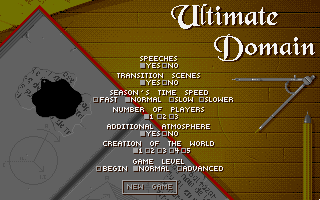
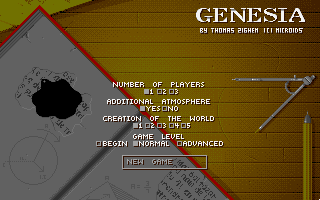
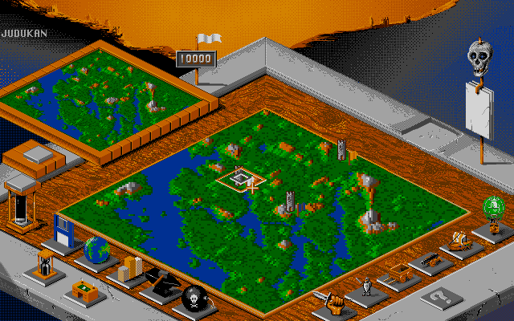

名稱：無盡空間／終極領域 (Ultimate Domain／Genesia，英文版) 簡介：Microids 1993年出品的城鎮建造模擬遊戲，1994年移植至DOS，由Mindscape代理發行 [待補]。    備註：本版為光碟版 保護：光碟版為光碟，磁片版為手冊密碼，磁片版破解碼不明。 備註：電腦速度不可太快，否則可能偵測不到音效卡而沒有音樂。 檔案：gen-disk.rar = 磁片版


